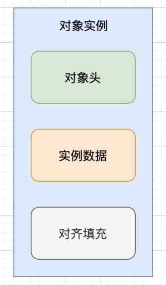
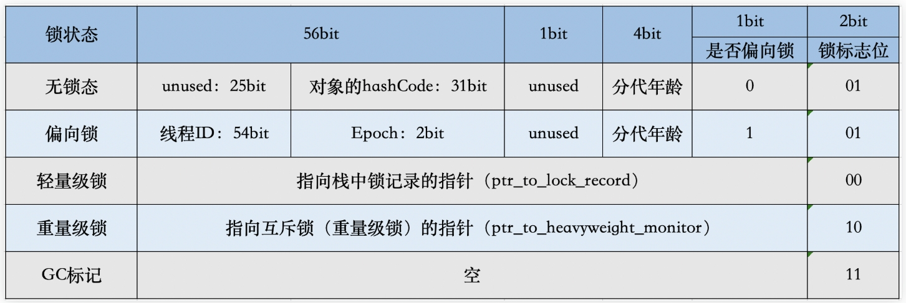

10Java对象的内存布局
new语句编译成字节码包含两部分：new指令请求内存空间，invokespecial指令调用构造器
Java对象头，包含标记字段和类型指针
- 标记字段 64位8字节
存储JVM有关该对象的运行数据，如哈希码、GC信息、锁信息 - 类型指针（元数据指针） 64位8字节（开启压缩指针时32位4字节）
存储指向该对象的类
每一个对象都有16字节额外开销，int占用4字节，Integer得对象额外增加400%内存开销，所以java引入基本类型


压缩指针
为减少对象的内存使用量，64 位Java虚拟机引入了压缩指针的概念（对应虚拟机选项 -XX:+UseCompressedOops，默认开启），将堆中原本 64 位的 Java 对象指针压缩成32位。
内存对齐
默认8字节对其，引用起始地址为8的倍数，不足的填充
字段内存对齐的其中一个原因，是让字段只出现在同一CPU的缓存行中。若跨缓存行则读取需替换两个缓存行，存储会污染两个缓存行
字段重排列
JVM重新分配字段先后顺序，达到内存对齐
三种排列方法 JVM选项 -XX:FieldsAllocationStyle，默认 1